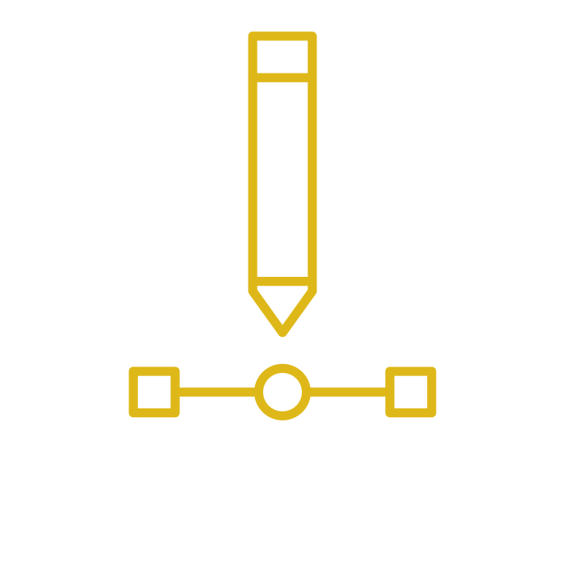

Readings
Upload a with your response to each weeks reading in your dropbox sketchbook.
Your response should be between 300 words outlining the major ideas from the reading as well as any ideas you think you could use in your work. Bonus marks if you make a PDF and typeset it!
Consider each reading by answering the following questions:
- Who is the author ?
- What is useful to me ?
- Why listen to them ?
- What's the idea here ?
- How does this text expand my understanding of design?